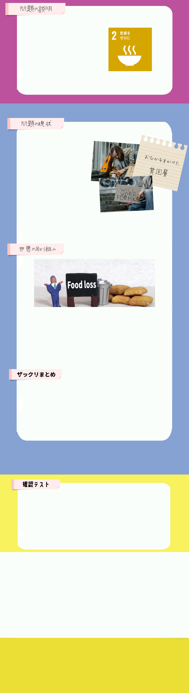
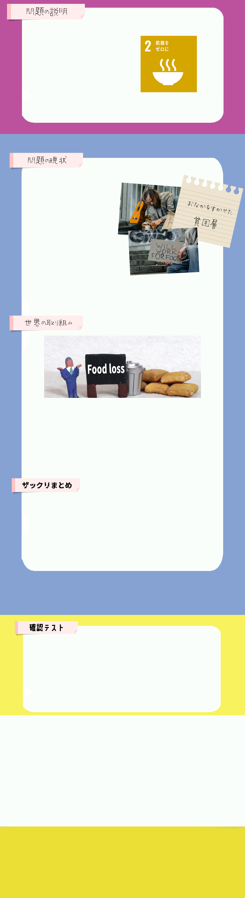

持続可能な開発目標、SDGsの目標2「飢餓をゼロに」は、文字通り飢餓で苦しむ人をなくすのが目標であり、食料を安定的に確保し、人々に供給できる世の中を目指します。 2030年までに飢餓や栄養不良に終止符を打つことをゴールとし、継続的な収益を生み出す仕組みの実現を目標としています。
飢餓とは長期間に渡って食事を摂る事ができずに栄養不足に陥り、生活と生存が困難な状態を言います。 飢餓には「突発的な飢餓」と「慢性的な飢餓」があって、「突発的な飢餓」は干ばつや洪水、紛争などの突発的な原因によって発生するもので食料が急激に不足するため多くの人々が餓死に追い込まれることもあります、「慢性的な飢餓」とは農業の生産性が低い、金銭的な問題や不公平な貿易の仕組みによって発生しているため世界から比較的注目されることが少ないです。 これらの飢餓は食料不足問題によって生まれています、2020年の調査で適切な食料を入手できていない人は世界で23億人以上もいることがわかっています。
世界では主に食糧問題を軸とした支援活動が見受けられます。
国連世界食糧計画（WFP）では食糧が不足している地域に向けて、食糧の緊急援助等の活動を行っています。
また学校給食支援も行っており、2016年には60か国、1640万人に給食を届けました。
飢餓にも種類があり、「突発的な飢餓」と「慢性的な飢餓」があります。 これらの飢餓はどちらも によって生まれる。
※穴埋め箇所をクリックすると正解表示